P052 · 10.4 （ADC）常规单通道转换¶
标题里的“单通道”和“常规序列”¶
各位同学好，我是铁头山羊。今天学习第十章第四节：常规序列的单通道转换。先解释标题：ADC 前端有多路模拟信号，但后面可以由一个 12 位逐次逼近型转换器轮流转换，这种复用让一个 ADC 服务多个输入。本节是入门实验，只选择其中一路信号，因此叫单通道转换。
ADC 结构图里还有两份转换计划：上面是常规序列（regular sequence），下面是注入序列（injected sequence）。两份计划都规定前端采样开关按什么顺序、每个开关闭合多长时间。它们的使用方法大体相同，本节先以常规序列说明。
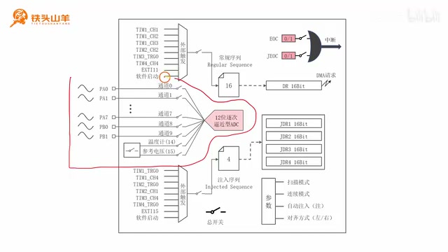
框图标出 ADC 复用与模拟输入路径，支撑单通道概念的回顾。 · 原片 00:40
光敏模块与实验判断条件¶
实验使用光敏传感器模块。VCC 接 3.3 V，GND 接地；R1 是 10 kΩ 普通电阻，R2 是光敏电阻。光照增强时 R2 阻值减小，分压点 AO 的输出电压也随之降低。AO 是 analog output，即模拟输出。
图中横轴是环境照度（lux），纵轴是 AO 电压。以 10 lux 作为临界点，大约相当于一盏日光灯的亮度，对应 AO 约 1.5 V。电压高于 1.5 V 说明光线较弱，熄灭板载 LED；低于 1.5 V 说明光线较强，点亮 LED。实验用 LED 表示周围光线强弱。
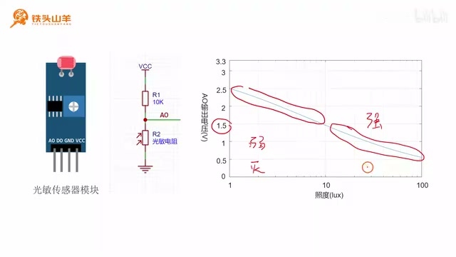
光敏模块的分压电路与光照强度—AO 电压曲线并列显示，曲线体现光照增强时输出电压下降。 · 原片 04:40
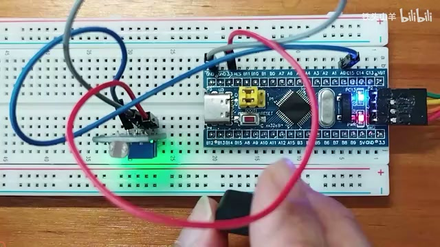
实验用光敏模块、开发板与面包板的实际连接状态。 · 原片 05:00
要测量 AO 的模拟电压，就把它接入单片机 ADC。外部输入通道有通道 0 到通道 9；通道 14、15 对应芯片内部温度计和参考电压。本实验任选一个外部通道，选择通道 0，它对应 PA0，因此把 AO 接到 PA0。模块上的 DO 是数字输出，本实验不用它。
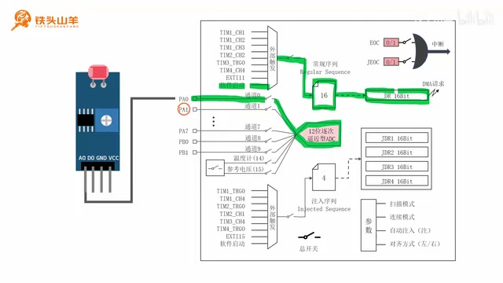
传感器 AO 到 PA0、ADC 通道 0 和常规序列的路径被标出，展示实验的采样路线。 · 原片 07:00
把通道 0 填入常规序列第一行，再由外部触发信号给序列一个脉冲。启动后 ADC 闭合 PA0 对应的采样开关，从输入模拟信号中取一个点；采样结束开关断开，12 位逐次逼近型 ADC 把这个采样点变成数字量并写入 DR 寄存器。读取 DR 后，程序才能计算 PA0 的电压。
接线时 AO 接 PA0，DO 悬空，GND 接单片机 GND，VCC 接 3.3 V。接好后按接线图核对。课程把实验分成七步：初始化 IO、配置 ADC 时钟、认识 ADC 接口、初始化 ADC 基本参数、配置常规序列、打开 ADC 总开关、启动序列并读取结果。
第一步：把 PA0 配置成模拟输入¶
本实验用通道 0 采集 AO，而通道 0 对应 PA0，所以要先初始化该引脚。GPIO 有八种工作模式，按信号方向分为四种输出、四种输入；四种输出依次是通用开漏、通用推挽、复用开漏和复用推挽，四种输入是上拉、下拉、浮空和模拟模式。前三种输入接收数字信号，本实验输入模拟电压，因此 PA0 要设为模拟模式。
打开模板工程，把解压出的文件夹和工程文件都命名为 regular single conversion，表示常规序列单通道转换。打开工程里的 main.c，声明 App_ADC1_Init 函数，把 ADC1 初始化代码放入其中。先为 GPIOA 开启时钟，再声明 GPIO 初始化结构体，GPIO_Pin 设为 GPIO_Pin_0，GPIO_Mode 设为模拟输入。
不确定枚举值时，可把光标放到 GPIO_Mode 按 F12 查看定义，再用 Ctrl+F 搜索。GPIO_Mode_AIN 中 AIN 是 analog input（模拟输入）的缩写。模拟模式属于输入模式，不用设置输出速度；结构体填好后调用 GPIO_Init。
第二步：配置 ADC 时钟¶
PA0 初始化完成后，第二步配置 ADC 时钟。ADC 不直接使用 PCLK2，中间有可设置分频系数的分频器。ADC 输入时钟不能超过 14 MHz；标准库默认 PCLK2 为 72 MHz，因此要分频到 14 MHz 以下。选择六分频后是 72÷6=12 MHz，符合要求。
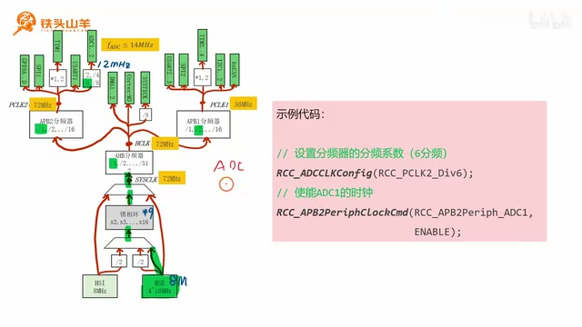
ADC 时钟树及 PCLK2 到 ADC 的分频路径，画面列出六分频配置示例。 · 原片 13:40
调用 RCC 时钟接口 RCC_ADCCLKConfig，参数填 RCC_PCLK2_Div6，即 PCLK2 除以 6。接着用 RCC_APB2PeriphClockCmd 为 ADC1 开启时钟，参数为 RCC_APB2Periph_ADC1 和 ENABLE。至此完成 ADC 分频设置和 ADC1 外设时钟使能。
第三步：认识 ADC 编程接口¶
相关接口共 22 个，分为通用、常规序列、注入序列和 ADC 校准四类。本节做常规序列的单通道转换，主要使用常规序列接口和部分通用接口；表格用黄色底色标出本节会用到的项目。
ADC_Init 用于初始化 ADC 基本参数，包括序列通道数、外部触发源、扫描和连续模式，以及数据左对齐还是右对齐。
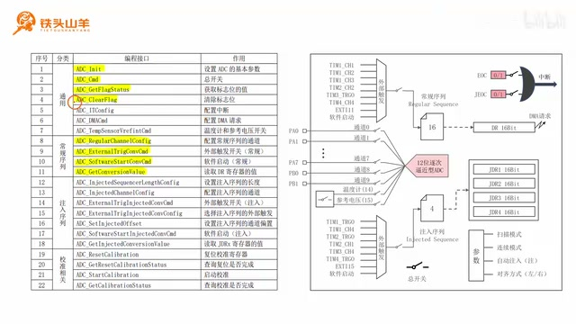
ADC 编程接口汇总表，黄色标记本课会使用的通用和常规序列接口。 · 原片 17:40
表中黄色标记的通用接口包括 ADC_Init、ADC_Cmd、ADC_GetFlagStatus、ADC_ClearFlag；常规序列部分标出配置通道、外部触发使能、软件启动和读取转换值。注入序列、校准等接口也列在表内，但这次不调用。 ADC_Cmd 控制 ADC 总开关，只有总开关闭合模块才能工作。ADC_GetFlagStatus 查询标志位：EOC 是 end of conversion，表示常规序列转换完成；JEOC 是 injected end of conversion，表示注入序列转换完成。相应序列完成后标志由 0 变为 1。ADC_ClearFlag 清除指定标志，本例之后会清 EOC。
常规序列相关接口有四个：ADC_RegularChannelConfig 配置计划中的通道；ADC_ExternalTrigConvCmd 控制序列左侧外部触发信号的开关；ADC_SoftwareStartConvCmd 通过软件向触发输入发送脉冲；ADC_GetConversionValue 读取转换结果，也就是常规序列完成后 DR 寄存器里的值。它们分别承担配置、放行、启动和读取的工作。
第四步：初始化 ADC 基本参数¶
调用 ADC_Init 初始化 ADC1。该函数接收 ADC 名称和初始化结构体参数，所以声明 ADC_InitTypeDef ADC_InitStruct，填写六个成员后调用 ADC_Init(ADC1, &ADC_InitStruct)。
第一个成员 ADC_ContinuousConvMode 控制连续转换模式，本实验暂时不用连续模式，设为 DISABLE；后续课程会再介绍。第二个成员 ADC_DataAlign 选择转换结果在寄存器中的对齐方式。
DR 和注入序列的 JDR1 到 JDR4 都是 16 位寄存器，但 ADC 转换结果只有 12 位，所以需要决定这 12 位靠左还是靠右存放。右对齐时高四位补零，低 12 位放结果；左对齐时高 12 位放结果，低四位补零。对齐只改变位的位置，不改变转换值。
例如有效位从 B0 到 B11。右对齐时 B0–B11 占寄存器最右侧 12 位，左边四位补零；左对齐时 B11–B0 占最左侧 12 位，右边四位补零。标准库结构体成员 ADC_DataAlign 就是选择这两种位置的设置项。
以 3.084 V 输入为例，按 0–3.3 V 量程，分辨率是 3.3÷(2¹²−1)，也就是 3.3÷4095。3.084 V 除以这个分辨率得到 3827，二进制为 1110 1111 0011。右对齐时左边补四个零，左对齐时右边补四个零。通常选右对齐，直接读取寄存器数值较方便。代码中填写 ADC_DataAlign_Right；可按 F12 查看定义，再用 Ctrl+F 找到 Right、Left 两项。
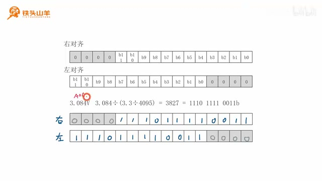
12 位转换结果放进 16 位寄存器的左右对齐示意及 3.084 V 算例。 · 原片 28:20
第三个成员 ADC_ExternalTrigConv 选择常规序列外部触发源。可选来源有八种：定时器 1 的通道 1、通道 2，定时器 2 通道 2，定时器 3 TRGO，定时器 4 通道 4，EXTI 线 11，定时器 1 通道 3，以及软件启动。本实验用最简单的软件启动选项，不依赖定时器事件。
第四个成员 ADC_Mode 设置双 ADC 工作模式。芯片里有 ADC1 和 ADC2，ADC2 结构相同；有些场景会让两个 ADC 配合工作。本课不需要配合，选择 ADC_Mode_Independent，让两者互不影响、各自独立。
第五个成员 ADC_NbrOfChannel 设置常规序列通道数。序列最多有 16 行，本次只转换通道 0，通道数设为 1。
第六个成员 ADC_ScanConvMode 控制扫描模式。本实验只有一个通道，不用扫描，查阅定义后设为 DISABLE。结构体给初值并填好六个成员后传给 ADC_Init，ADC 基本参数就配置完成。
第五步：配置常规序列¶
基本参数已经设好通道数量 1 和软件触发源，常规序列还要写入实际通道及采样时间，并使能外部触发开关。
常规序列最多 16 行，每行要填写通道号和采样时间。通道号决定闭合哪个采样开关。通道 0 通过 PA0 接光敏传感器；上一节算过该模块内阻对应的采样时间约为 10.24 个 ADC 周期，所以要选接近的库选项。
使用 ADC_RegularChannelConfig 配置，四个参数依次为 ADC1、通道 ADC_Channel_0、行号 rank 1、采样时间。rank 表示计划行号；本例把通道 0 写入第一行。
采样时间选项包括 1.5、7.5、13.5、28.5、41.5 个周期，直到 239.5 个周期。10.24 周期最接近 13.5 周期，因此选 ADC_SampleTime_13Cycles5。然后调用 ADC_ExternalTrigConvCmd(ADC1, ENABLE)，闭合常规序列外部触发开关，使软件脉冲能够送入序列。
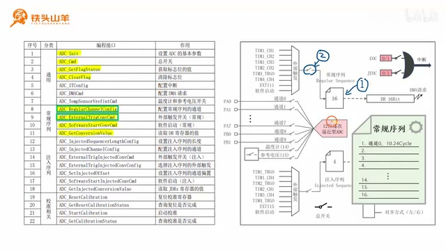
常规序列第一项及软件触发路径的示意，标出通道和采样时间计划。 · 原片 37:20
第六步：打开 ADC 总开关¶
调用 ADC_Cmd(ADC1, ENABLE) 闭合 ADC 总开关。将 App_ADC1_Init 放到 main 中调用，ADC 初始化完成。
第七步：启动转换并读取结果¶
进入循环后，先清 EOC，避免上一次的完成状态影响本轮判断；再通过软件启动发送脉冲，常规序列开始转换。转换完成后 EOC 从 0 变为 1，结果进入 DR。程序等待 EOC 后，再从 DR 读取本轮的值。
第一步调用 ADC_ClearFlag(ADC1, ADC_FLAG_EOC) 清除常规序列完成标志。第二步调用 ADC_SoftwareStartConvCmd(ADC1, ENABLE) 发出软件启动脉冲。第三步调用 ADC_GetFlagStatus(ADC1, ADC_FLAG_EOC)，在 while 循环中等待 EOC 不再为 RESET。转换没完成之前不能读取 DR。
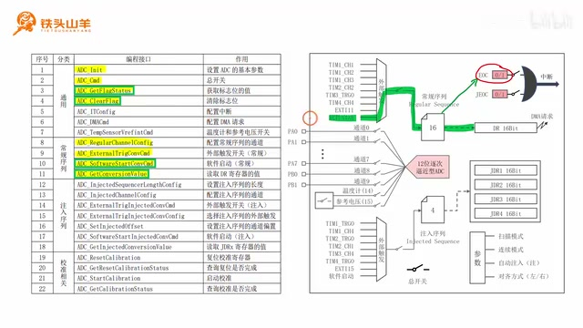
程序中清除 EOC、发软件启动脉冲并轮询转换完成的代码片段。 · 原片 42:40
EOC 变为完成状态后，调用 ADC_GetConversionValue(ADC1) 读取 DR，保存到 uint16_t dr。右对齐的结果范围是 0–4095，对应输入电压 0–3.3 V：数字 0 对应 0 V，4095 对应 3.3 V。因此电压按 voltage = dr * (3.3f / 4095) 计算，使用浮点数保存。
以 10 lux 对应约 1.5 V 为判断线：电压大于 1.5 V 时光线较弱，熄灭板载 LED；低于 1.5 V 时光线较强，点亮 LED。LED 接在 PC13 上，使用前要初始化 GPIOC 时钟、PC13 引脚、普通推挽输出模式和 2 MHz 输出速度，再调用 GPIO_Init。ADC 和 LED 初始化没有先后依赖。
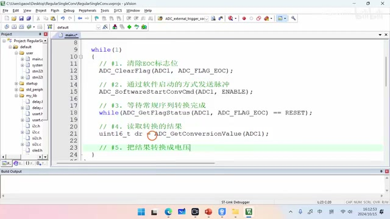
循环代码依次清除 EOC、发出软件启动脉冲、等待 EOC 完成并读取 DR；下方注释提示将结果换算为电压。 · 原片 47:00
声明 App_OnBoardLED_Init 并在 main 中调用。程序判断 voltage > 1.5 时调用 GPIO_WriteBit(GPIOC, GPIO_Pin_13, Bit_SET) 熄灭板载 LED；否则使用 Bit_RESET 点亮。代码写完后点击左上角第二个按钮编译，画面显示没有错误和警告。准备下载时发现调试器还没插上，先接好调试器再下载。
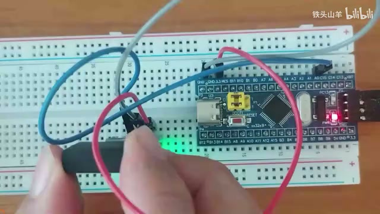
运行中的开发板和传感器，演示遮挡前后的 LED 状态变化。 · 原片 51:00
下载完成后按下单片机复位按钮。拍摄时是白天、环境光较强，LED 点亮；用黑色物体盖住光敏传感器，LED 熄灭；移开后点亮，再盖上又熄灭，实验成功。
通过这个实验，我们练习用光敏传感器检测周围光线，并了解使用常规序列进行 ADC 单通道转换的编程方式。本期视频到这里结束，我是铁头山羊，感谢收看，下期再见。